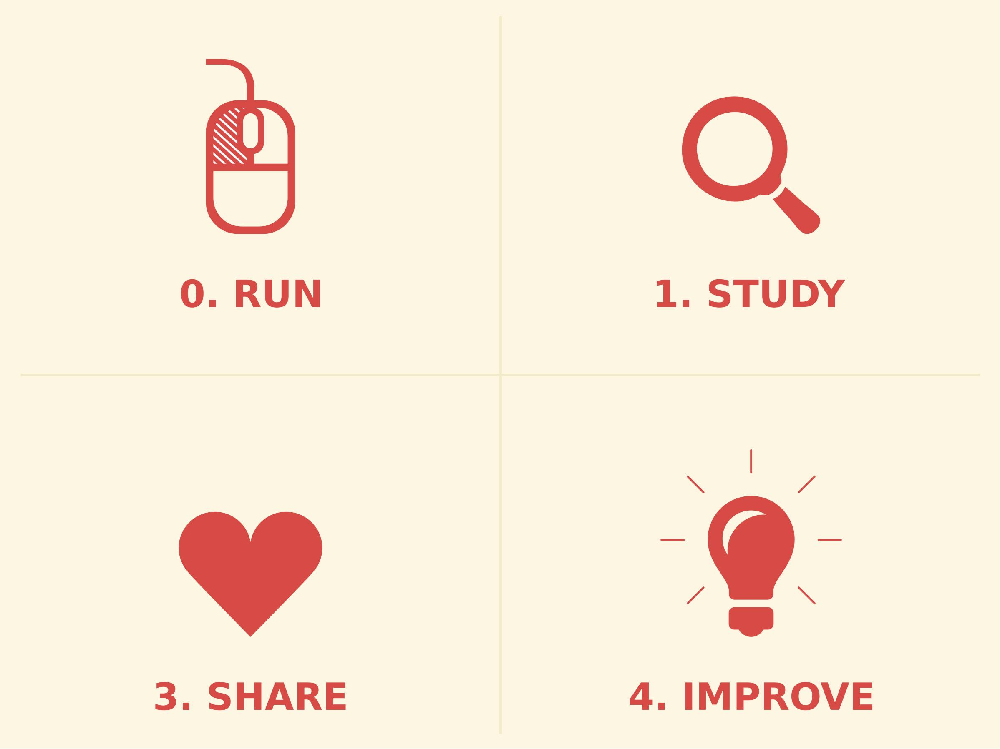

four freedoms revision 2097


The Free Software Definition describes the four essential software freedoms as follows:
- The '''freedom to run''' the program as you wish, for any purpose.
- The '''freedom to study''' how the program works, and change it so it does your computing as you wish. Access to the source code is a precondition for this.
- The '''freedom to redistribute copies''' so you can help others.
- The '''freedom to distribute copies of your modified versions''' to others. By doing this you can give the whole community a chance to benefit from your changes. Access to the source code is a precondition for this.
Replimat seeks to extend the paradigm of Free Software further into Open Hardware by applying the four essential software freedoms to physical goods and processes. In the context of physical goods (as opposed to digital) the freedoms become use, inspect, modify, and sell:
- The '''freedom to use'''. Run or otherwise execute the software, product, or process.
- The '''freedom to inspect''' or view how the object functions in the preferred format for making changes. This stems from the freedom to study how the program works, and change it to make it do what you wish. Access to the source code such as CAD files, text documents, spreadsheets, calculations, instructions, etc. is a necessary prerequisite for making substantive changes.
- The '''freedom to modify'''. This is a big point: making improvements or adaptation is a key to distributing value.
- Economic freedom. The '''freedom to sell'''. Freedom distribute copies of your modified versions to others. By doing this you can give the whole community a chance to benefit from your changes. Access to the source code is a precondition for this.
The four essential freedoms enable the fundamental creative processes: '''copying''', '''transformation''', and '''combination''' as outlined in Everything is a Remix.
Replimat Licenses
- Creative Commons Attribution-ShareAlike International
- GNU Affero General Public License v3+
- TAPR Open Hardware License
References
- Free Software Definition
- Debian Free Software Guidelines
- Everything is a Remix
- iFixit Repair Manifesto
- OpenSourceEcology 4 Freedoms
- The Case for Free Use: Reasons Not to Use a Creative Commons NC License
- Bradshaw, Simon; A. Bowyer and P. Haufe, “The Intellectual Property Implications of Low-Cost 3D Printing”, 7:1 SCRIPTed 5, 2010.
- de Bruijn, Erik. “Fab It Yourself: Adapters & Consumer Lock-In”. Blog.erikdebruijn.nl, 13 September 2010.
- Hanna, Peter. “The next Napster? Copyright questions as 3D printing comes of age”. Arstechnica.com, April 2011.
- Ross, Valerie. “Can You Patent a Shape? 3D Printing on Collision Course With Intellectual Property Law”. Discover Magazine, 7 April 2011.
- Weinberg, Michael. “3D Printing Settlers of Catan is Probably Not Illegal: Is This a Problem?”. PublicKnowledge.org, 28 January 2011.
- Weinberg, Michael. “It Will Be Awesome if They Don’t Screw it Up: 3D Printing, Intellectual Property, and the Fight Over the Next Great Disruptive Technology”. PublicKnowledge.org, 10 November 2010.
In addition to the writers above, we tip our hats to Thingiverse user Zydac, whose related project (a Duplo-to-Brio track adapter) led us to these legal writings; to Andrew Plumb (Clothbot) who has probed the legal and practical implications of Lego-compatible bricks for some time; and to Daan van den Berg, who has explored 3D-printed remixes of branded forms as a mode of critical artistic practice.